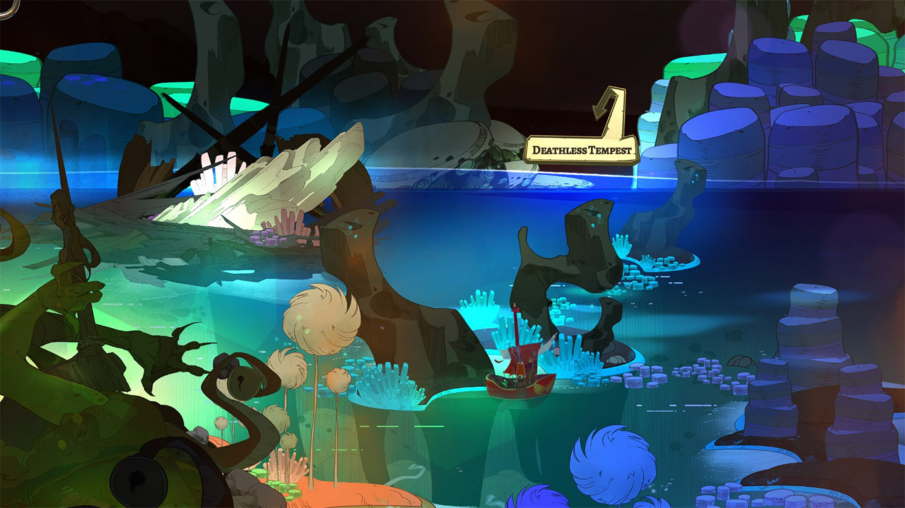
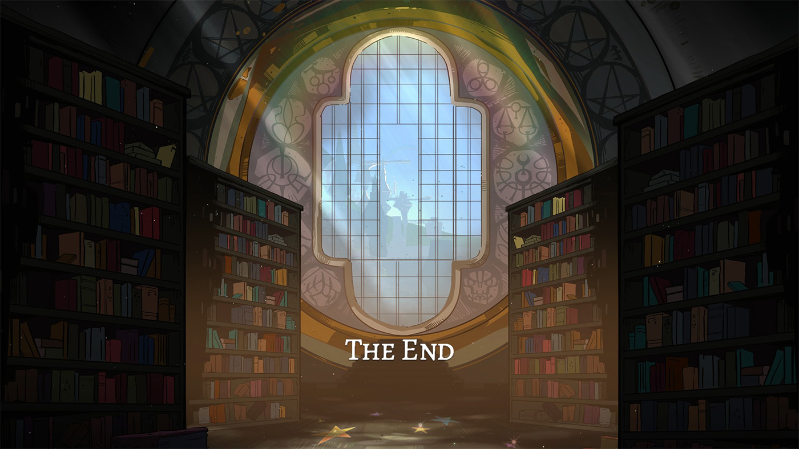

Pyre
"Ligaratus?"
Sunt fan Supergiant Games. Bastion mi-a plăcut foarte mult și chiar a fost primul joc pe care l-am cumpărat în ziua lansării. Și, chiar dacă n-am jucat Transistor, ci doar l-am experimentat second-hand, de pe margine, mi-au plăcut ideea și realizarea artistică. Așa că atunci când a fost anunțat Pyre l-am pus pe wishlist imediat ce am văzut trailerul. Numai că ulterior s-a estompat treptat din memorie, până la punctul în care, atunci când s-a lansat, nici nu-mi mai aduceam aminte ce m-a entuziasmat inițial, dincolo de grafică și numele producătorului. De aceea, când s-a desfășurat Secret Santa pe forum iarna trecută, nici nu l-am pus pe primele poziții în lista priorităților, sperând să primesc alte jocuri. Recunosc că am fost apoi puțin dezumflat când am primit Pyre, cu totul altceva decât mă așteptam, dar, după ce l-am încercat, am realizat că poate că nu întâmplător moșul meu secret e singurul din lista de prieteni care îl și jucase. Îi mulțumesc din nou pe această cale - a fost o surpriză nu doar pentru că a fost un cadou neașteptat, dar și o experiență minunată, la care altfel nu știu când (sau chiar dacă) aș fi ajuns.
O să încep direct cu concluzia și o să vă zic că jocul este excelent, dar s-ar putea să nu fie pentru toată lumea. La nivel superficial este asemănător cu jocurile anterioare - găsim și aici unele aspecte deja consacrate în Bastion și Transistor, respectiv grafica și muzica superbe, cu stiluri asemănătoare, precum și anumite particularități de gameplay. Deși ați putea crede că sunt făcute din același aluat, Pyre este cu totul altceva, ba chiar e diferit și de oricare alte jocuri la care mă pot gândi acum. Chiar dacă nu aduce nimic cu adevărat nou, felul în care sunt combinate elemente deja familiare din alte jocuri, precum și povestea și personajele foarte bine scrise, creează o experiență unică. Pentru mine a devenit repede jocul preferat de la Supergiant (motiv pentru care, deși m-am străduit să-mi țin în frâu efuziunile, nu prea mi-a reușit), dar, în același timp, îmi dau seama că această combinație s-ar putea să nu fie pe placul tuturor.
Din păcate, însă, deoarece partea narativă este cea care ridică jocul și vă va ocupa o bună parte a timpului petrecut cu acesta - iar ceea ce-l face cu adevărat special se întâmplă de la un moment încolo - este și puțin mai dificil de descris și trebuie să vorbesc cu băgare de seamă ca să nu stric surpriza cuiva. Drept urmare, dacă pe parcursul articolului unele idei par a fi mai neclare decât ar putea fi sau fără exemple, e posibil să fie intenționat, m-am străduit să-mi aleg cuvintele astfel încât să nu dau niciun spoiler.
Acestea fiind spuse, să începem.
***
Dacă în Bastion acțiunea jocului se petrece într-o lume fantasy-western post-declin, iar Transistor e plasat într-un oraș fantasy-cyberpunk în pragul declinului, ambele interpretate într-o manieră proprie, Supergiant Games au construit în Pyre o lume fantasy în care declinul e la mare distanță în trecut. Civilizația s-a refăcut sub forma Commowealth-ului, un imperiu autoritar cu o populație multi-rasială și construit pe un fundament religios închinat celor opt „zei” care alcătuiesc panteonul mitologic al lumii.
Acțiunea jocului se petrece însă într-un ținut complet izolat, unde sunt trimiși toți criminalii, infractorii și în general oricine e nedorit de stăpânire, cu vină reală sau fabricată, loc care se numește Austr… Downside. Iar exilul în Downside e un bilet doar „dus” și echivalează aproape cu o condamnare la moarte, căci regiunea e aspră și neprimitoare și nu există nicio modalitate fizică de a reveni în Commonwealth.
Dacă e să ne luăm după grafică, Downside arată mai degrabă ca un rai luxuriant, o feerie cromatică. Dar descrierile presărate la tot pasul, dialogul cu personajele și cursul poveștii au grijă să transmită cât de apăsător e acest teritoriu asupra trupului și spiritului oricui ajunge aici.
Aici începe povestea noastră. Personajul jucătorului ajunge în exil în pragul morții și este găsit de un trio de personaje ce cutreieră regiunea într-o căruță (nu vă gândiți la un car tras de boi, e o căruță din aceea acoperită, o casă pe roți). Unul dintre ei realizează că jucătorul este un Cititor și că astfel le poate fi de folos, întâmplător ei fiind în posesia unei Cărți pe care nu pot s-o folosească. Am uitat să vă spun că în imperiu este interzisă alfabetizarea, iar a ști să citești, sau chiar a deține material scris sau tipărit, este o infracțiune capitală care atrage automat exilul. Știu cum sună, e genul de premisă ridicolă folosită în jocuri și filme pentru a angrena personajele într-un conflict. Dar aici e folosită altfel și oricum nu ocupă un rol central în joc, ci doar introduce un motiv mai larg care străbate întreg firul narativ. Pe moment, însă, calitatea de a ști să citești e utilă pentru noii noștri prieteni pentru că ea deschide calea tuturor către libertate, ceea ce-i asigură Cititorului nostru salvarea de la moarte și un loc în echipa lor - The Nightwings. Da, ieșirea imposibilă din Downside este posibilă, dar numai pentru cei care știu să folosească Cartea sfântă.
Astfel luăm contact cu mitologia jocului și cu riturile orânduite de cei opt Scribi (The Eight Scribes), figuri divine care au lăsat scris într-o carte sacră (The Book of Rites) pașii prin care cei inițiați pot parcurge calea iertării, dobândind înțelepciune (englightenment) și dovedindu-și virtutea într-o serie de întreceri ritualice (The Rites) desfășurate pe tot cuprinsul Downside-ului. La capătul acestui drum se află șansa de eliberare din exil și întoarcerea la lumea reală.
Da, întreaga poveste e presărată de concepte și simboluri religioase și oculte - cartea sacră, purgatoriul, mântuirea și altele - dar jocul nu e unul religios, căci ele sunt folosite în principal pentru valoarea filozofică a temelor și pentru a justifica unele elemente de gameplay.
Echipa Nightwings, viitorii voștri prieteni
{kind=link}
{kind=link}
***
Jocul e descris drept un „party-based RPG”, dar e departe de ceea ce s-ar înțelege în mod normal printr-un RPG. În realitate, e mult mai aproape de o nuvelă vizuală, căci jumătate din joc o veți petrece în ecrane de dialog cu portretele personajelor - ocazional având posibilitatea de a face unele alegeri pentru a influența cursul poveștii - sau în căruță, care servește rolul de ecran de management.
Cealaltă jumătate o constituie ritualurile de care vorbeam mai sus, echivalentul luptelor dintr-un RPG convențional, numai că aici acestea sunt sunt mai degrabă niște înfruntări sportive, în care preiei controlul unei „echipe” de trei personaje împotriva unui alt grup într-un „meci” pe „puncte”. Veți vedea mai jos în detaliu la ce mă refer.
Între două astfel de înfruntări, grupul se deplasează pe harta lumii, oprindu-se ocazional pentru anumite evenimente semi-random, cum ar fi alegerea unei rute alternative sau o perioadă de „antrenament”, care pot aduce creșteri în nivel pentru membrii echipei. Simplificând foarte mult lucrurile, jocul poate fi văzut ca turneul unei echipe sportive de la un meci la altul pe durata unui campionat, numai că aici titlul final e libertatea.
Acesta e jocul pe scurt. De aici înainte vă așteaptă o poveste plină de întorsături de situație, cu personaje interesante, dialoguri bine scrise, tensiune, emoție și decizii grele, însoțite de strângeri de inimă, dar și de satisfacție. No spoilers.
***
Am zis la început că jocul nu aduce nimic cu adevărat nou, dar nu e pe de-a-ntregul adevărat. Sportul fictiv folosit pe post de ritual sacru preia elemente din sporturi reale și le combină într-un mod interesant și original, cu destule variabile încât să dea naștere la strategii și posibilități de joc complet diferite. Meciul se desfășoară într-o arenă dreptunghiulară, iar fiecare echipă de trei jucători are de apărat un rug (acel Pyre ce dă titlul jocului), care arde cu o flacără magică, obiectivul fiind să stingă focul adversarilor. În acest scop jucătorii vor folosi un „glob astral” (Celestial Orb), care are rolul de minge; aceasta trebuie adusă în contact cu rugul advers, moment în care intensitatea acestuia va scădea cu o anumită valoare.
Ca să vizualizați mai ușor, gândiți-vă la un meci de fotbal american sau rugby, în care jucătorul care deține controlul mingii trebuie să ajungă în terenul advers pentru a o plasa prin plonjare sau aruncare într-un punct fix, similar cu a marca un eseu sau a înscrie un coș la baschet. Iar peste aceste reguli de bază se adaugă diverși modificatori care influențează sau schimbă dinamica jocului.
O arenă tipică. Observați rugurile de pe laturile mici.
{kind=link}
{kind=link}
Și aici ajungem la partea de „RPG” a lui Pyre. Voi sări peste multe detalii despre mecanicile jocului - cei interesați le vor găsi în caseta care însoțește articolul. Trebuie să rețineți doar că toate personajele din joc au câteva atribute de bază (cum ar fi cât de mult damage fac rugului advers sau cât de repede de deplasează pe teren) și abilități diferite care pot fi dezvoltate pe parcurs, la care se adaugă unele obiecte speciale. Numai că toate acestea nu au efect decât în cadrul ritualurilor și nu afectează în niciun fel restul jocului sau cursul poveștii. Ce contează, în schimb, sunt rezultatele meciurilor și dialogurile cu adversarii, dar despre acestea voi vorbi puțin mai jos în articol.
Una peste alta, ritualurile reprezintă un concept destul de original, dar puțin decuplat de la povestea principală, iar din acest motiv este în general și partea cea mai criticată a jocului. Din punct de vedere mecanic, „sportul” este interesant și bine executat, ușor de jucat, dar în același timp cu numeroase finețuri tactice, și reprezintă o alternativă inedită și binevenită la eternele sisteme de combat cu diverse variațiuni din alte jocuri. Însă cât de distractiv este de jucat… asta depinde de fiecare jucător în parte, expresia „acquired taste” i se aplică foarte bine. Și, deoarece reprezintă o parte semnificativă din joc, va influența și impresia finală asupra jocului - e diferența dintre a te bucura de joc „împreună cu” și „în ciuda” ritualurilor. Dacă vei prinde gustul lor, vei avea parte de experiența completă pe care o poate oferi jocul și te vei bucura pe deplin de toate aspectele sale. Dacă nu… Pyre merită jucat chiar și numai pentru poveste, iar ritualurile sunt, în cel mai rău caz, tolerabile (și puteți reduce și dificultatea la minimum).
Personal, după primele meciuri am decis să scad dificultatea la minimum. Și nu pentru că nu mi-ar fi plăcut, ci pentru că am vrut să rămân conectat cât mai mult la poveste, fără să mă concentrez prea tare pe pregătirea meciurilor și pe nevoia de a experimenta diverse strategii și combinații de abilități și obiecte. Ce m-a surprins însă a fost că restul meciurilor nu au fost automat floare la ureche și nici lipsite de intensitate, ba chiar au fost în continuare meciuri pe care era cât pe-aci să le pierd. Să zicem doar că pentru mine a fost nivelul potrivit pentru a simți o provocare și o anumită tensiune la fiecare meci, dar fără să mă simt frustrat de unii adversari rapizi sau să mă rup prea mult de curgerea poveștii. În ce vă privește, ar fi mai bine să experimentați, căci s-ar putea să vă placă o provocare mai mare și să vreți să utilizați mai mult partea de RPG - după cum ziceam, toate abilitățile personajelor și obiectele ce pot fi echipate influențează strict performanța din timpul meciurilor.
***
Acum, după ce am vorbit atât de mult despre Ritualuri (nu uitați să citiți și caseta dedicată), am ajuns și la partea cea mai interesantă a jocului, povestea și personajele. Dar, cum jocul vă rezervă câteva surprize, și cel puțin una dintre ele va schimba semnificativ felul în care veți percepe jocul, voi încerca să nu intru prea mult în detalii.
O să menționez doar ceva ce afli oricum la început. Prin rolul pe care ți-l rezervă povestea, tu, jucătorul, chiar dacă nu ai un avatar în joc, ești un personaj ca toate celelalte, ba poate chiar cel mai important din echipă. Cititorul este singurul care poate descifra Cartea Riturilor și care poate dirija ritualurile, astfel că celelalte personaje se vor pune de acord să îți lase ultimul cuvânt în mai toate deciziile care vor trebui luate de-a lungul aventurii. Dar, cum spune proverbul acela din bătrâni, odată cu puterea vine și o grea responsabilitate.
A, și încă ceva: pregătiți-vă de citit. Dialoguri, biografii, descrieri de locuri, narațiune, backstory și iarași dialoguri. Din fericire, nu veți da de blocuri lungi de text, ci doar bucățele ușor digerabile și variate și, mai ales, foarte bine scrise, e o plăcere să citești orice în jocul ăsta.
Veți dialoga frecvent cu mai mult de un personaj.
Paginile din Cartea Sfântă, deblocate pe parcurs, vor dezvălui treptat fundalul narativ în care se desfășoară toată aventura.
După cum am menționat la început, jocul e o călătorie de-a lungul căreia te vei înfrunta cu diferite echipe adverse (și ele urmărind același scop ca și tine), vei vizita diverse locuri și vei purta în permanență dialoguri cu membrii echipei.
Vei ajunge astfel, cu timpul, să le cunoști povestea și chiar să le influențezi soarta prin alegerile pe care le vei face. Iar alegeri vei face în permanență, mai mici sau mai mari. Dar chiar și deciziile fără mare impact au efect narativ și contribuie la caracterizarea personajelor și la dezvoltarea relației cu ele. Nici nu există alegeri „bune” sau „rele”; jocul e mai nuanțat de atât și nici nu te judecă pentru deciziile luate.
Și dacă am zis „alegeri” să nu vă gândiți că jocul are finaluri multiple. Nu, povestea are un singur sfârșit, dar care ia în calcul tot ghemul de decizii pe care le-ai făcut de-a lungul jocului. Tabloul va fi același, doar că tușele și culorile vor fi diferite pentru fiecare dintre voi (cel mai probabil chiar unice, având în vedere că Greg Kasavin estima la câteva milioane numărul de combinații posibile, având în vedere numărul personajelor, interacțiunilor dintre ele și momentele decizionale).
În aceeași temă, jocul e construit astfel încât să nu existe situații de game over. Pierderea unui ritual e parte din joc, iar povestea se va ajusta în consecință și drumul va continua. În Pyre trăiești cu eșecul și consecințele acestuia, iar povestea tot va ajunge la final, într-un fel sau altul. Și da, asta înseamnă că jocul poate fi terminat chiar dacă pierzi absolut toate confruntările la care iei parte. Victoria în ritualuri e doar unul dintre factorii care influențează destinul personajelor.
Pe parcursul aventurii, componența echipei tale variază, dar, spre deosebire de precedentele jocuri Supergiant, aici vei controla mai multe personaje. Mă abțin de la a da exemple, dar tipologiile sunt diverse și, chiar dacă unele v-ar putea lăsa impresia reluării unor stereotipuri des întâlnite, nu vă temeți - personalitățile lor sunt mult mai bine conturate decât ați putea crede. Iar cursul poveștii te obligă să adaugi membri noi în echipă sau să renunți la unele personaje, dar într-un mod natural, bine pregătit și pus în scenă, ceea ce creează momente cu puternică încărcătură emoțională atunci când, de exemplu, trebuie să alegi cu inima strânsă un personaj care să părăsească echipa. De asemenea, vei fi nevoit să variezi și configurația echipelor de joc - deci și tacticile folosite - atât pentru a te adapta la componența și abilitățile adversarilor, cât și pentru că jocul impune o penalitate dacă folosești un jucător în prea multe meciuri consecutiv.
Prezență impunătoare, dar n-ai motive să-ți fie teamă de Jodariel.
Iar dacă motivele pentru care membrii echipei tale au ajuns în exil diferă, scopul final e același pentru toți: libertatea, ieșirea din purgatoriu. Astfel, miza jocului nu e una de viață și moarte, de salvare a lumii sau ceva la fel de grandios, tipic power fantasy-urilor din RPG-uri sau alte jocuri, ci una mult mai personală și mai ușor de înțeles de către jucătorul din fața ecranului. Și asta îi conferă o credibilitate mai mare, iar importanța meciurilor va fi resimțită mai acut, știind că în joc e efectiv libertatea prietenilor tăi; miza și tensiunea devin palpabile.
Toate aceste lucruri contribuie la construirea unei relații cu fiecare membru al echipei și, cu timpul, te vei atașa puternic de ei și ajunge să-ți pese foarte mult de ce se întâmplă cu ei. Și asta nu doar pentru faptul că ajungi să-i cunoști mai bine, dar și pentru că împărtășiți aceeași soartă. E acel gen de legătură care se creează între persoane diferite, dar aruncate în vâltoarea unor încercări pe care trebuie să le îndure împreună - gândiți-vă la camaraderia care se naște între marinarii unei corăbii sau între soldații unei unități de pe front. În plus, din poziția de decident pe care i-o rezervă jocul jucătorul are o încărcătură suplimentară - nu doar că este unul dintre ei și este supus aceluiași destin, dar este responsabil și de soarta celorlalți.
***
Această legătură afectivă cu lumea jocului n-ar fi fost posibilă dacă scenariul și calitatea dialogurilor nu ar fi fost la înălțime. Din fericire, acestea reprezintă părțile cele mai bune ale jocului și reușesc să aducă la viață mai toate personajele și relațiile dintre ele și să dea credibilitate tuturor scenelor. Și, chiar dacă nu te vei atașa de toți în egală măsură, tovarășii tăi au personalități bine conturate și nuanțate, cu propriile speranțe și regrete, momente de slăbiciune, de egoism sau de generozitate precum și spirit de sacrificiu al binelui propriu în beneficiul grupului.
De exemplu, sunt situații în care vei discuta cu câte unul dintre tovarășii tăi și îl vei ajuta să depășească un moment de tristețe sau de îndoială în propriile forțe, sau în care vei fi alături de el atunci când îi e dor de o persoană dragă, sau situații în care surprinzi mai multe personaje pur și simplu stând de vorbă, râzând și depănând amintiri. Momente și trăiri reale, plauzibile, care dau autenticitate însoțitorilor tăi.
O decizie mică, dar care va rămâne până la sfârșitul jocului.
De asemenea, nici adversarii tăi nu au fost neglijați. E drept că nu toți au fost tratați cu aceeași atenție (și în general doar liderii echipelor sunt conturați), dar și ei au, la rândul lor, propriile personalități și motivații, și vei descoperi că unii dintre ei sunt ceva mai mult decât par la început. Cu ei vei avea ocazia să interacționezi atât înainte, cât și în timpul meciurilor, unii putând avea chiar diverse legături cu personajele din grupul tău (cum ar fi, de exemplu, o veche rivalitate), legături care se pot face simțite și în evoluția personală a personajelor respective, suplimentar față de rezultatul meciului cu acei adversari.
Detestabilă ființă.
Și, având în vedere că povestea se desfășoară aproape integral prin intermediul dialogurilor și interacțiunii cu personajele, este absolut remarcabil felul în care dialogurile se adaptează la toate deciziile tale. Astfel, jocul ține cont de alegerile din trecut, de combinațiile de personaje pe care le alegi pentru meciuri, de rezultatul înfruntărilor, de interacțiunea cu adversarii, de unele momente în care ai petrecut timp în privat doar cu câte unul dintre prietenii tăi și așa mai departe. Și este impresionant cât de puține sunt liniile de dialog care să pară generice. Majoritatea replicilor se desfășoară natural, integrând, unde e cazul, alegerile pe care le-ai făcut în trecut, iar dialogurile au o curgere firească, fără să pară ca și când ar fi compuse din fragmente cu aplicabilitate mai largă.
***
Dacă dialogurile excelente construiesc foarte bine povestea, sunt multe alte elemente care dau viață lumii jocului în care se desfășoară aventura. În primul rând, trebuie menționată grafica, de care încă n-am zis nimic, deși poate cu asta ar fi trebuit să încep articolul, pentru că e primul lucru pe care îl observi - e pur și simplu superbă. Nu doar că e cea mai bună dintre titlurile Supergiant până acum - ceea ce nu-i puțin lucru - dar Pyre e printre cele mai frumoase jocuri pe care le-am văzut vreodată. Detaliile, cromatica și stilistica folosite fac din fiecare cadru un potențial wallpaper, ceea ce sper că e evident din imaginile pe care le vedeți atașate în articol.

{kind=link}
{kind=link}
Dar aceste imagini nu spun decât jumătate din poveste. Animațiile sunt atât de fluide de parcă ar fi preluate dintr-un film de animație, în special mișcarea flăcărilor rugului și a personajelor din timpul meciurilor. La acestea se adaugă o puzderie de mici efecte și detalii aruncate la tot pasul, care dau viață jocului. Fenomenele atmosferice, obiectele de decor din căruță care se adună pe post de suvenir din locurile prin care treci (și cu care poți interacționa în diverse feluri), Cartea ritualurilor care lasă o senzație aproape tactilă de pagini îmbibate cu magie, chiar și elementele de interfață… toate au diverse efecte grafice atașate, astfel încât ai o plăcută senzație de lume reală care te înconjoară.
La această senzație contribuie și micile artificii narative care explică fiecare element de gameplay: modificatori de dificultate, meciuri de probă, challenge-uri suplimentare pe care le poți face cu fiecare personaj pentru o recompensă specială, paginile de backstory pe care le deblochezi pe măsură ce joci și așa mai departe. Chiar dacă sunt ușor forțate, aceste mici detalii au rolul de a contura mai bine lumea jocului și de a crește imersiunea prin reducerea disonanței dintre elementele pure de „joc” și elementele de poveste. Aș remarca aici în mod special faptul că preiei direct controlul personajelor în timpul meciurilor, ceea ce contribuie în mod direct la poveste și la întărirea legăturii afective cu personajele, subliniind modul în care tu, ca îndrumător spiritual al echipei, ești răspunzător de destinul lor.
{kind=link}
{kind=link}
De asemenea, la loc de cinste trebuie așezată și partea sonoră. Muzica e compusă de același Darren Korb și, deși e capitolul pe care mă simt cel mai puțin capabil să-l judec, se simte o evoluție față de piesele anterioare din Bastion și Transistor - compozițiile sunt ceva mai complexe, mult mai variate (până și adversarii au fiecare o temă muzicală proprie) și complementarizează foarte bine atmosfera și diferitele momente ale jocului. Serios, nu mi-aș imagina jocul fără ritmurile acelea inconfundabile de chitară. Și nu lipsesc nici piesele cu interpretarea vocală a lui Korb și Ashley Barrett, nu multe, dar bine alese în câteva ocazii speciale.
În ce privește vocile, dialogurile sunt vorbite, dar numai parțial și într-o melodioasă limbă inventată - inspirată din latină, japoneză și altele (de exemplu, subtitlul articolului, Ligaratus, înseamnă Reader, și-l veți auzi destul de des). Ar fi fost nerealist să înregistreze toate scenele, având în vedere numărul de variabile, dar este mai mult decât suficient pentru a crea atmosferă și a spori senzația de lume străină. Există însă și câteva momente cu dialog în engleză, plus, un mic spoiler, e din nou prezentă și vocea lui Logan Cunningham, deși pun pariu că nu-l veți recunoaște.
***
Cred că ar fi cazul să mai și închei, pentru că am vorbit destul de mult, mai mult decât aș fi crezut că o s-o fac, dar și mai puțin decât aș fi vrut. Povestea m-a prins incredibil de tare și m-am atașat de omuleții ăia desenați mai mult decât am făcut-o poate de personajele fotorealiste din Witcher III.
Asta nu înseamnă că jocul nu ar avea și părți mai puțin bune. O critică care i s-ar putea aduce e că nu a prezentat mai deloc viața obișnuită din Downside, în afara ritualurilor și interacțiunilor cu adversarii din „turneu”. O altă problemă ar fi legată de ritmul jocului, care începe puțin cam lent, iar spre sfârșit devine în același timp și grăbit, dar și mai lung cu câteva ore decât ar fi putut fi.
Dar astea sunt, până la urmă, doar chestiuni minore care nu mai au importanță odată ce te-au captivat povestea și interacțiunile cu personajele, alături de care vei vrea să petreci cât mai mult timp.
Cum ziceam la început, jocul s-ar putea să nu fie pentru oricine. E o combinație inedită de părți care par a se adresa unor categorii diferite de jucători: avem o jumătate pentru cei care preferă un joc static, în care să petreacă mai mult timp citind și urmărind povestea, și o jumătate pentru cei care preferă un joc alert, cu accent pe reflexe și tactică în timp real.
Dacă citiți totuși ce am scris mai sus și îi veți da o șansă, veți descoperi o impresionantă poveste despre camaraderie, perseverență, sacrificiu și speranță, o experiență diferită de alte jocuri, care nu se încadrează într-un gen fix, ce merită încercată cu prisosință. ■
(PS. Pe forum veți găsi și câteva mențiuni suplimentare, cu ceva spoilere)

Sportul sacru
O să descriu aici puțin mai în detaliu regulile ritualurilor pentru a nu aglomera restul articolului pentru că, așa cum ziceam, elementele care compun sportul sacru nu au efect asupra restului jocului și, de asemenea, pentru că jocul poate fi jucat și standalone - există un mod de joc multiplayer local, separat de campanie (accesibil din meniul de start), în care poți încinge meciuri cu prietenii de pe canapea și în care poți folosi toate personajele și obiectele din joc.
Spre deosebire de jocurile care simulează alte sporturi de echipă, în ritualuri nu se deplasează decât un singur jucător la un moment dat, cel pe care îl controlezi, ceilalți rămânând nemișcați, indiferent dacă echipa se află în ofensivă sau în defensivă. Poți schimba foarte ușor între jucătorii pe care îi controlezi, aproape instantaneu, cu deosebirea că, atunci când ataci, odată cu controlul se pasează și mingea (apropo, vă recomand călduros un gamepad). După cum vă puteți închipui, asta vine cu niște limitări, cum ar fi, de exemplu, că nu poți să poziționezi separat un jucător într-un loc liber căruia să-i poți pasa apoi mingea. Punctele se marchează doar penetrând defensiva adversă cu jucătorul care are posesia Orb-ului.
Cum ziceam în articol, sunt două metode prin care poți marca. Prima și cea mai utilizată va fi să plonjezi cu personajul care are mingea direct în rugul advers, moment în care, odată cu stingerea corespunzătoare a flăcării, jucătorul respectiv este eliminat din joc (Banished) până la următorul punct marcat (de către oricare dintre echipe). Alternativa este că poți arunca Orb-ul de la distanță, ca pe o minge de baschet, cu dezavantajul că punctajul obținut (damage-ul adus rugului) este ceva mai mic, iar adversarii pot intercepta bila de pe traiectoria sa.
Apoi urmează mecanica care stă la baza confruntării efective dintre echipe, respectiv Aura. În mod normal, fiecare personaj are o aură în jurul său care e practic un câmp de forță ce elimină temporar din joc orice adversar cu care intră în contact. Această aură poate fi proiectată și la distanță, direcționat, pentru a elimina inamicii de la distanță. Dezavantajul este că, deși aura se regenerează rapid, rămâi totuși fără apărare timp de câteva fracțiuni de secundă, timp în care poți fi eliminat sau depășit de un adversar ce avansează către rugul tău. Lucrurile se schimbă atunci când ești în posesia orb-ului, moment în care aura dispare și rămâi complet vulnerabil, fiind nevoie să te bazezi pe jocul de echipă, respectiv trecerea orb-ului de la un jucător la altul pentru a fragmenta sau depăși defensiva adversă (nu uitați că pasele se dau aproape instantaneu) și pe rapiditatea și abilitățile individuale ale jucătorilor.
Atributele jucătorilor sunt în număr de patru, cu valoare de bază care diferă în funcție de rasă: Glory (cât de mult damage fac rugului advers), Hope (cât de mult timp rămân eliminați din joc), Presence (cât de mare e aura din jurul lor în timpul meciului) și Quickness (cât de repede de deplasează în mers sau sprint).
Pe lângă acestea, fiecare personaj are doi mini-arbori de abilități, opt în total, din care poți alege să deblochezi, pe măsură ce capeți experiență, maxim patru. Acestea variază foarte mult în funcție de rasă și pot schimba semnificativ dinamica unui meci, cum ar fi un rug cu flacără mai puternică, revenirea jucătorului în joc automat în anumite condiții după ce a fost eliminat, stamina infinită, sărituri duble sau chiar triple, încetinirea adversarilor și multe altele, care pot fi folosite în diferite combinații, unele mai eficiente decât altele.
Apoi, în timpul meciurilor, toate personajele au câteva abilități de bază, dar care, în funcție de rasa jucătorului, se pot manifesta diferit. În general, toți jucătorii pot sprinta, dar la unii asta înseamnă niște țopăituri rapide sau chiar o teleportare pe distanță scurtă. Apoi, toți jucătorii au o formă de săritură, care la unii e înlocuită de zbor sau planare pe distanțe scurte. Și, în fine, toți jucătorii au o formă de atac, respectiv proiecția aurei, dar pe care unii o pot proiecta ca o bandă cu lățime mai mare, sau chiar într-o formă conică, sau sub forma unei auto-detonări cu impact pe o rază mare.
Și toate acestea pot fi îmbunătățite cu talismane. Fiecare personaj poate echipa câte un astfel de obiect magic, care acordă bonusuri semnificative, cum ar fi creșteri la atributele de bază (Hope sau Quickness), un rug mai potent, un plus de damage contra rugului advers, stamină infinită în anumite condiții, regenerarea rugului propriu etc. Există și talismane unice (folosibile doar de un anumit personaj) sau upgrade-uri care augmentează efectul talismanelor.
Nu mai intru în detalii, dar există și alte elemente care pot influența cursul unui joc, dintre care mai importante ar fi arenele însele, care prezintă diverse obstacole care blochează trecerea jucătorilor și proiecția aurelor (dar pe care le poți folosi și în avantajul propriu, pentru protecție) și, în buna tradiție Supergiant, unii modificatori suplimentari care pot crește dificultatea înfruntărilor în schimbul unui bonus de experiență. Plus diverse alte subtilități pentru jucătorii mai experimentați, precum power-casting și power-jumping, sau saluturile, sau mini-challenges opționale în timpul meciurilor.
Poate sună prea mult sau complicat, dar în practică jocul e fluid și antrenant, ușor de învățat și de jucat dar în același timp cu numeroase posibilități tactice pentru cei care vor să experimenteze sau caută o provocare. Există tot felul de strategii care se pot naște în baza anumitor build-uri de personaje și/sau combinații de talismane, plus strategii de joc și abilitatea de execuție. De exemplu, poți învăța să sari pentru a contracara un adversar care a plonjat spre rugul tău - dacă îl prinzi în zbor, aura ta își va face efectul și adversarul va fi eliminat. Sau, alt exemplu, un truc eficient (dar nu mereu facil) e aruncarea orb-ului direct în adversar - scopul în general e să păstrezi posesia, dar în acest mod adversarul își va pierde aura la contactul cu orb-ul și îl vei putea elimina ușor, reluând apoi posesia și atacul.
Și, în caz că vă întrebați, chiar va fi nevoie să stăpâniți bine jocul, dacă vreți să jucați pe un nivel de dificultate mai mare. Adversarii au, desigur, un control mai bun și pot pune în aplicare unele combinații mai greu de executat pentru un adversar uman. Un exemplu pe care l-am observat - pentru că altceva nu am avut ce să fac - a fost când un adversar a avansat până spre apărătorul meu, a dat pasă înapoi, a sărit peste apărător, a primit înapoi pasă și a înscris nestingherit. Bravo! În plus, echipele adverse cresc și ele în nivel, așa că vor folosi aceleași abilități la care vor căpăta acces și personajele tale, plus că vor folosi talismane, iar dacă toate astea nu sunt suficiente, mai sunt și niște modificatori de dificultate pe care îi poți activa înainte de fiecare meci, la fel ca și în celelalte jocuri Supergiant. Iar dacă la început există unele strategii câștigătoare pe care le puteți folosi pentru a câștiga ușor - cum ar fi să folosiți jucători rapizi - nu vă așteptați să fie utile până la sfârșitul jocului.
Bineînțeles, întreaga confruntare e învelită în ceremonial, în ton cu restul jocului, cu muzică solemnă și termeni ezoterici, cu rădăcini în firul narativ, care oferă o semnificație ocultă pentru fiecare element din ritualului - de exemplu, aura reprezintă materializarea „păcatelor” din viața reală, cea de dinaintea exilului - dar acestea reprezintă doar un strat subțire de poveste peste ceea ce este, în esență, un sport fantasy de echipă, care ar putea fi transplantat destul de ușor și în alte jocuri. ■
Galerie imagini